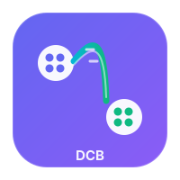
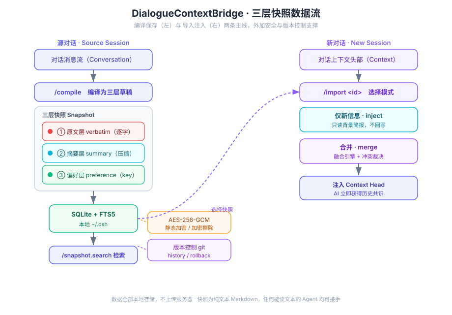

为大语言模型（LLM）与 AI 智能体的对话做跨会话上下文桥接：把一次对话里「已经了解的信息」打包成可移植的知识单元，一键引入新对话 —— 跨会话不再重复解释背景，关键信息零丢失。
做长周期项目（软件开发、学术研究、产品设计）时，工作往往跨越多个对话会话。每开一个新对话就要重新解释背景，于是出现三个老问题：
反复手动复制粘贴历史上下文，浪费注意力在「复读」上。
关键决策、代码、参数在摘要里被磨平，原子级细节消失。
长期项目的连续性被会话边界切断，AI「忘了」之前达成的共识。
快照不是对话日志的转储，而是一个结构化三层复合体 —— 把「不可压缩」与「可压缩」分开处理，从根上解决摘要损失。
/compile 压缩为分层要点。scope+key 归档，便于跨快照裁决。左线在源对话里 /compile + /save 落库；右线在新对话里一键引入，可选「仅新信息」(只读) 或「合并」(融合引擎) 模式。

# 1. 一步导出当前对话为可移植快照（编译 + 落库，等价 /compile + /save） /dcb-save --title "上下文桥接架构评审" --tags 架构,phase1 # 2. 在任意时刻按关键词找回它 /snapshot-search 上下文桥接 # 3. 在新对话里一键引入 —— 默认「仅新信息」模式（只读背景，不回写） /import snap_a1b2c3 # 想让当前对话与历史快照融合？用 merge 模式 /import snap_a1b2c3 --mode merge # 一步融合的别名（省一次交互）：/dcb-merge/dcb-merge snap_a1b2c3 --policy newWins # 只看简报、不注入，先确认内容对不对 /import snap_a1b2c3 --dry-run
所有命令都可在输入框按 /（或点 + 菜单按钮）唤起命令面板，鼠标点选即执行，走宿主、不经模型、零 token。命令回执统一为纯文本卡片（emoji + ·/→/─，DSH 不解析 Markdown，故不出现 **、反引号等符号）。每个命令都声明了输入提示，即使在输入框手打带参命令回车，也会由宿主直接拦截执行、不再误发模型。
| 命令 | 说明 | 常用选项 |
|---|---|---|
/compile | 编译当前对话为三层快照草稿并预览 | --title --tags --max-tokens --full --discard |
/save | 把草稿写入本地记忆库；无草稿时即时编译并保存 | --title --tags |
/dcb-save | 一步导出当前对话为快照（编译+落库，回显 id 与引入命令） | --title --tags --full |
/snapshot-search | FTS5 全文检索（多关键词为 AND 语义） | -n, --limit |
/snapshot-list | 列出快照 | -n --here |
/snapshot-show | 查看快照完整文档与完整性校验 | --meta |
/snapshot-remove | 删除快照及其索引（不可撤销） | — |
/snapshot-history | 查看快照版本历史（Phase 4 版本控制） | — |
/snapshot-rollback | 回滚快照到历史版本并重新落库 | --to <ref> |
/import | 引入历史快照：默认「仅新信息」，亦可「合并」 | --mode inject|merge --policy -d |
/dcb-merge | 一步融合快照（等价 /import <id> --mode merge） | --policy newWins|snapshotWins|timestamp -d |
/dcb | 一键台：带 id 等价 inject 一键引入；不带 id 显示记忆库总览 | — |
/dcb-export | 把快照导出为独立 .md 文件（跨设备/跨账号可移植） | --all -o <dir> |
/dcb-import | 从 .md 文件导入快照到记忆库（自动分配新 id 防覆盖） | --dry-run |
所有数据只存在本机 ~/.dsh/，不上传任何服务器。
可选 AES-256-GCM 静态加密；丢弃口令即销毁全部密文。
快照为纯文本 Markdown，任何能读文本的 Agent 都能接手。